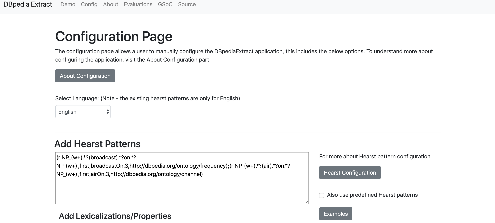
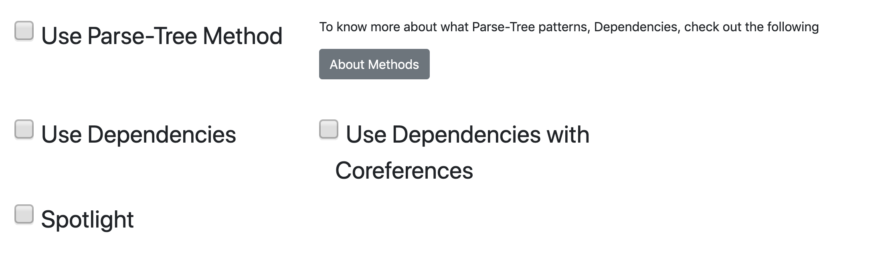
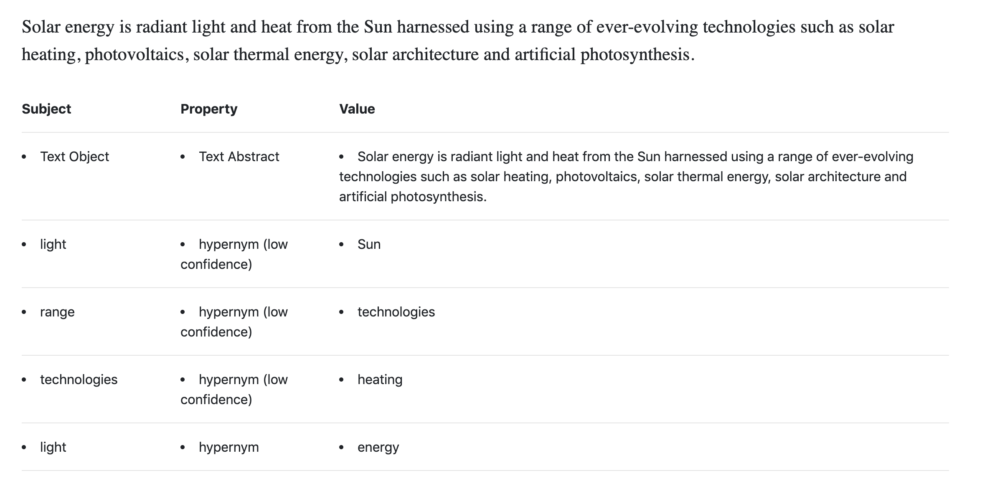

About hearst patterns
Use Cases
DBPedia Extract Manual
The following is a manual to use DBpedia Extract - tool for efficiently extracting triples from a text andf displaying the coresponding RDF. The web application can be found here
The example text for being used for testing can be found here - https://worksheets.codalab.org/rest/bundles/0xb4ab264671fe4e3bae00e9367a88eaeb/contents/blob/
In order to use the web application the following steps are to be done :-
- Setting up the configuration, this inclues the following sub-steps
- Selecting the required methods for the configurations
- Adding additional input parameters
- Language
- Running the application on the text
- Understanding the results
Setting the configuration
Through out the manual, we will be using an example text for better understanding. In our case we will be using the following text :-
Solar energy is radiant light and heat from the Sun
harnessed using a range of ever-evolving technologies
such as solar heating, photovoltaics, solar thermal
energy, solar architecture and artificial
photosynthesis.
First in order to set the configuration, we shall navigate to the configuration page, which can be found by selcting the config tab on the navigation bar
We next select the methods which we shall want to use. Such methods can simply checked out using the checkboxes
In our case let us select the Dependencies method. Informatio about methods can be found by clicking on the About methods button.
Do remember to select the required language. Hearst pattern will be discussed in the About hearst patterns page
We then click the set configuration button. This will set the configuration you have chosen and you will be directed to a page which will display the settings you have chosen. In our case the setting pagew ill show the following.

In general the configuration can be checked by clicking on the Get configuration button.
Using the Web Application
Once the configuration has been set, we can now use the web-application. We do so byu heading onto the main page

Here we simply the required text, we would like to get triples from and simply click the Get triples button. This then directs you to the results page. For our given text and configuration, we should get the following page
Understanding the results
We have now got the triples from the text. However in order to get the RDF, Spotlight must be checked in the configuration The results when spotlight is selected along with the same methods we have used before

RDF for the following text can be looked at, by simply clicking the Get RDF text button. For our text, this should open the following page